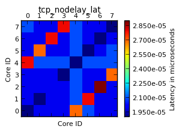
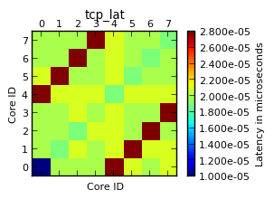
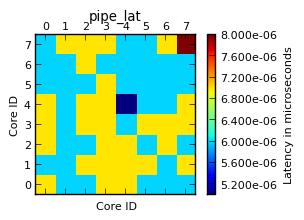
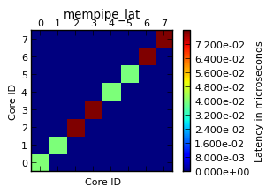
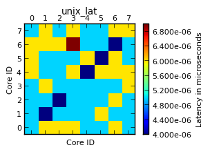
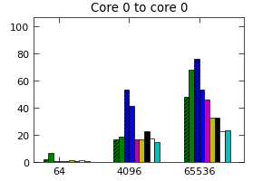
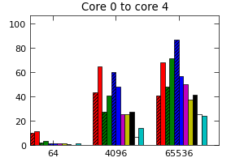
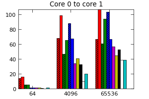

Hardware overview
| Cores (threads): | 8, Intel(R) Core(TM) i7-2600K CPU @ 3.40GHz |
| NUMA: | no |
| Total memory: | 15.62 GB |
| Operating system: | Linux 2.6.35-31-generic x86_64 |
| Virtualized: | no |
Latency
These graphs show the pairwise IPC latency between cores.
|  |  |  |
|  |  |
{kind=link}
{kind=link}
{kind=link}
{kind=link}
{kind=link}
Throughput
These graphs show the IPC throughput for continous communication between a pair of cores. The y-axis shows throughput in Gbps, and the x-axis different chunk sizes.
Click on the graphs to show a larger version.

|  |  |  |
{kind=link}
{kind=link}
{kind=link}
Raw data
The raw results data for this experiment can be downloaded here.
This research is done by the NetOS group at the University of Cambridge Computer Laboratory. If you have any questions or would like to learn more, please contact us directly:
Email:
cl-ipc-bench@lists.cam.ac.uk
Postal address:
NetOS group
University of Cambridge Computer Laboratory
Willam Gates Building
15 JJ Thomson Avenue
Cambridge CB3 0FD, UK
Tel.: +44 1223 763683